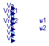

Extends from Modelica.Icons.InternalPackage (Icon for an internal package (indicating that the package should not be directly utilized by user)).
| Name | Description |
|---|---|
| LQ_Base |

| Type | Name | Default | Description |
|---|---|---|---|
| Real | K[2, 5] | [4.4072, 4.7416, 2.9566, 0.7... |
| Type | Name | Description |
|---|---|---|
| output RealOutput | u1 | |
| output RealOutput | u2 | |
| input RealInput | Vd | Temperature room 2 |
| input RealInput | Va | Temperature room 1 |
| input RealInput | Ve | Temperature Inside Wall |
| input RealInput | Vc | Temperature wall 2 |
| input RealInput | Vb | Temperature wall 1 |
| input RealInput | Vref1 | Desired temperature room 1 |
| input RealInput | Vref2 | Desired temperature room 1 |